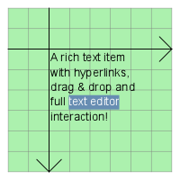

QGraphicsTextItem Class
The QGraphicsTextItem class provides a text item that you can add to a QGraphicsScene to display formatted text. More...
| Header: | #include <QGraphicsTextItem> |
| CMake: | find_package(Qt6 REQUIRED COMPONENTS Widgets) target_link_libraries(mytarget PRIVATE Qt6::Widgets) |
| qmake: | QT += widgets |
| Inherits: | QGraphicsObject |
Public Types
| enum | anonymous { Type } |
Properties
- openExternalLinks : bool
- textCursor : QTextCursor
Public Functions
| QGraphicsTextItem(QGraphicsItem *parent = nullptr) | |
| QGraphicsTextItem(const QString &text, QGraphicsItem *parent = nullptr) | |
| virtual | ~QGraphicsTextItem() |
| void | adjustSize() |
| QColor | defaultTextColor() const |
| QTextDocument * | document() const |
| QFont | font() const |
| bool | openExternalLinks() const |
| void | setDefaultTextColor(const QColor &col) |
| void | setDocument(QTextDocument *document) |
| void | setFont(const QFont &font) |
| void | setHtml(const QString &text) |
| void | setOpenExternalLinks(bool open) |
| void | setPlainText(const QString &text) |
| void | setTabChangesFocus(bool b) |
| void | setTextCursor(const QTextCursor &cursor) |
| void | setTextInteractionFlags(Qt::TextInteractionFlags flags) |
| void | setTextWidth(qreal width) |
| bool | tabChangesFocus() const |
| QTextCursor | textCursor() const |
| Qt::TextInteractionFlags | textInteractionFlags() const |
| qreal | textWidth() const |
| QString | toHtml() const |
| QString | toPlainText() const |
Reimplemented Public Functions
| virtual QRectF | boundingRect() const override |
| virtual bool | contains(const QPointF &point) const override |
| virtual bool | isObscuredBy(const QGraphicsItem *item) const override |
| virtual QPainterPath | opaqueArea() const override |
| virtual void | paint(QPainter *painter, const QStyleOptionGraphicsItem *option, QWidget *widget) override |
| virtual QPainterPath | shape() const override |
| virtual int | type() const override |
Signals
| void | linkActivated(const QString &link) |
| void | linkHovered(const QString &link) |
Reimplemented Protected Functions
| virtual void | contextMenuEvent(QGraphicsSceneContextMenuEvent *event) override |
| virtual void | dragEnterEvent(QGraphicsSceneDragDropEvent *event) override |
| virtual void | dragLeaveEvent(QGraphicsSceneDragDropEvent *event) override |
| virtual void | dragMoveEvent(QGraphicsSceneDragDropEvent *event) override |
| virtual void | dropEvent(QGraphicsSceneDragDropEvent *event) override |
| virtual void | focusInEvent(QFocusEvent *event) override |
| virtual void | focusOutEvent(QFocusEvent *event) override |
| virtual void | hoverEnterEvent(QGraphicsSceneHoverEvent *event) override |
| virtual void | hoverLeaveEvent(QGraphicsSceneHoverEvent *event) override |
| virtual void | hoverMoveEvent(QGraphicsSceneHoverEvent *event) override |
| virtual void | inputMethodEvent(QInputMethodEvent *event) override |
| virtual QVariant | inputMethodQuery(Qt::InputMethodQuery query) const override |
| virtual void | keyPressEvent(QKeyEvent *event) override |
| virtual void | keyReleaseEvent(QKeyEvent *event) override |
| virtual void | mouseDoubleClickEvent(QGraphicsSceneMouseEvent *event) override |
| virtual void | mouseMoveEvent(QGraphicsSceneMouseEvent *event) override |
| virtual void | mousePressEvent(QGraphicsSceneMouseEvent *event) override |
| virtual void | mouseReleaseEvent(QGraphicsSceneMouseEvent *event) override |
| virtual bool | sceneEvent(QEvent *event) override |
Detailed Description
If you only need to show plain text in an item, consider using QGraphicsSimpleTextItem instead.
To set the item's text, pass a QString to QGraphicsTextItem's constructor, or call setHtml()/setPlainText().
QGraphicsTextItem uses the text's formatted size and the associated font to provide a reasonable implementation of boundingRect(), shape(), and contains(). You can set the font by calling setFont().
It is possible to make the item editable by setting the Qt::TextEditorInteraction flag using setTextInteractionFlags().
The item's preferred text width can be set using setTextWidth() and obtained using textWidth().
Note: In order to align HTML text in the center, the item's text width must be set. Otherwise, you can call adjustSize() after setting the item's text.

Note: QGraphicsTextItem accepts hover events by default. You can change this with setAcceptHoverEvents().
See also QGraphicsSimpleTextItem, QGraphicsPathItem, QGraphicsRectItem, QGraphicsEllipseItem, QGraphicsPixmapItem, QGraphicsPolygonItem, QGraphicsLineItem, and Graphics View Framework.
Member Type Documentation
enum QGraphicsTextItem::anonymous
The value returned by the virtual type() function.
| Constant | Value | Description |
|---|---|---|
QGraphicsTextItem::Type | 8 | A graphics text item |
Property Documentation
openExternalLinks : bool
Specifies whether QGraphicsTextItem should automatically open links using QDesktopServices::openUrl() instead of emitting the linkActivated signal.
The default value is false.
Access functions:
| bool | openExternalLinks() const |
| void | setOpenExternalLinks(bool open) |
textCursor : QTextCursor
This property represents the visible text cursor in an editable text item.
By default, if the item's text has not been set, this property contains a null text cursor; otherwise it contains a text cursor placed at the start of the item's document.
Access functions:
| QTextCursor | textCursor() const |
| void | setTextCursor(const QTextCursor &cursor) |
Member Function Documentation
[explicit] QGraphicsTextItem::QGraphicsTextItem(QGraphicsItem *parent = nullptr)
Constructs a QGraphicsTextItem. parent is passed to QGraphicsItem's constructor.
See also QGraphicsScene::addItem().
[explicit] QGraphicsTextItem::QGraphicsTextItem(const QString &text, QGraphicsItem *parent = nullptr)
Constructs a QGraphicsTextItem, using text as the default plain text. parent is passed to QGraphicsItem's constructor.
See also QGraphicsScene::addItem().
[virtual noexcept] QGraphicsTextItem::~QGraphicsTextItem()
Destroys the QGraphicsTextItem.
void QGraphicsTextItem::adjustSize()
Adjusts the text item to a reasonable size.
[override virtual] QRectF QGraphicsTextItem::boundingRect() const
Reimplements: QGraphicsItem::boundingRect() const.
[override virtual] bool QGraphicsTextItem::contains(const QPointF &point) const
Reimplements: QGraphicsItem::contains(const QPointF &point) const.
[override virtual protected] void QGraphicsTextItem::contextMenuEvent(QGraphicsSceneContextMenuEvent *event)
Reimplements: QGraphicsItem::contextMenuEvent(QGraphicsSceneContextMenuEvent *event).
QColor QGraphicsTextItem::defaultTextColor() const
Returns the default text color that is used for unformatted text.
See also setDefaultTextColor().
QTextDocument *QGraphicsTextItem::document() const
Returns the item's text document.
See also setDocument().
[override virtual protected] void QGraphicsTextItem::dragEnterEvent(QGraphicsSceneDragDropEvent *event)
Reimplements: QGraphicsItem::dragEnterEvent(QGraphicsSceneDragDropEvent *event).
[override virtual protected] void QGraphicsTextItem::dragLeaveEvent(QGraphicsSceneDragDropEvent *event)
Reimplements: QGraphicsItem::dragLeaveEvent(QGraphicsSceneDragDropEvent *event).
[override virtual protected] void QGraphicsTextItem::dragMoveEvent(QGraphicsSceneDragDropEvent *event)
Reimplements: QGraphicsItem::dragMoveEvent(QGraphicsSceneDragDropEvent *event).
[override virtual protected] void QGraphicsTextItem::dropEvent(QGraphicsSceneDragDropEvent *event)
Reimplements: QGraphicsItem::dropEvent(QGraphicsSceneDragDropEvent *event).
[override virtual protected] void QGraphicsTextItem::focusInEvent(QFocusEvent *event)
Reimplements: QGraphicsItem::focusInEvent(QFocusEvent *event).
[override virtual protected] void QGraphicsTextItem::focusOutEvent(QFocusEvent *event)
Reimplements: QGraphicsItem::focusOutEvent(QFocusEvent *event).
QFont QGraphicsTextItem::font() const
Returns the item's font, which is used to render the text.
See also setFont().
[override virtual protected] void QGraphicsTextItem::hoverEnterEvent(QGraphicsSceneHoverEvent *event)
Reimplements: QGraphicsItem::hoverEnterEvent(QGraphicsSceneHoverEvent *event).
[override virtual protected] void QGraphicsTextItem::hoverLeaveEvent(QGraphicsSceneHoverEvent *event)
Reimplements: QGraphicsItem::hoverLeaveEvent(QGraphicsSceneHoverEvent *event).
[override virtual protected] void QGraphicsTextItem::hoverMoveEvent(QGraphicsSceneHoverEvent *event)
Reimplements: QGraphicsItem::hoverMoveEvent(QGraphicsSceneHoverEvent *event).
[override virtual protected] void QGraphicsTextItem::inputMethodEvent(QInputMethodEvent *event)
Reimplements: QGraphicsItem::inputMethodEvent(QInputMethodEvent *event).
[override virtual protected] QVariant QGraphicsTextItem::inputMethodQuery(Qt::InputMethodQuery query) const
Reimplements: QGraphicsItem::inputMethodQuery(Qt::InputMethodQuery query) const.
[override virtual] bool QGraphicsTextItem::isObscuredBy(const QGraphicsItem *item) const
Reimplements: QGraphicsItem::isObscuredBy(const QGraphicsItem *item) const.
[override virtual protected] void QGraphicsTextItem::keyPressEvent(QKeyEvent *event)
Reimplements: QGraphicsItem::keyPressEvent(QKeyEvent *event).
[override virtual protected] void QGraphicsTextItem::keyReleaseEvent(QKeyEvent *event)
Reimplements: QGraphicsItem::keyReleaseEvent(QKeyEvent *event).
[signal] void QGraphicsTextItem::linkActivated(const QString &link)
This signal is emitted when the user clicks on a link on a text item that enables Qt::LinksAccessibleByMouse or Qt::LinksAccessibleByKeyboard. link is the link that was clicked.
See also setTextInteractionFlags().
[signal] void QGraphicsTextItem::linkHovered(const QString &link)
This signal is emitted when the user hovers over a link on a text item that enables Qt::LinksAccessibleByMouse. link is the link that was hovered over.
See also setTextInteractionFlags().
[override virtual protected] void QGraphicsTextItem::mouseDoubleClickEvent(QGraphicsSceneMouseEvent *event)
Reimplements: QGraphicsItem::mouseDoubleClickEvent(QGraphicsSceneMouseEvent *event).
[override virtual protected] void QGraphicsTextItem::mouseMoveEvent(QGraphicsSceneMouseEvent *event)
Reimplements: QGraphicsItem::mouseMoveEvent(QGraphicsSceneMouseEvent *event).
[override virtual protected] void QGraphicsTextItem::mousePressEvent(QGraphicsSceneMouseEvent *event)
Reimplements: QGraphicsItem::mousePressEvent(QGraphicsSceneMouseEvent *event).
[override virtual protected] void QGraphicsTextItem::mouseReleaseEvent(QGraphicsSceneMouseEvent *event)
Reimplements: QGraphicsItem::mouseReleaseEvent(QGraphicsSceneMouseEvent *event).
[override virtual] QPainterPath QGraphicsTextItem::opaqueArea() const
Reimplements: QGraphicsItem::opaqueArea() const.
[override virtual] void QGraphicsTextItem::paint(QPainter *painter, const QStyleOptionGraphicsItem *option, QWidget *widget)
Reimplements: QGraphicsItem::paint(QPainter *painter, const QStyleOptionGraphicsItem *option, QWidget *widget).
[override virtual protected] bool QGraphicsTextItem::sceneEvent(QEvent *event)
Reimplements: QGraphicsItem::sceneEvent(QEvent *event).
void QGraphicsTextItem::setDefaultTextColor(const QColor &col)
Sets the color for unformatted text to col.
See also defaultTextColor().
void QGraphicsTextItem::setDocument(QTextDocument *document)
Sets the text document document on the item.
See also document().
void QGraphicsTextItem::setFont(const QFont &font)
Sets the font used to render the text item to font.
See also font().
void QGraphicsTextItem::setHtml(const QString &text)
Sets the item's text to text, assuming that text is HTML formatted. If the item has keyboard input focus, this function will also call ensureVisible() to ensure that the text is visible in all viewports.
See also toHtml(), hasFocus(), and QGraphicsSimpleTextItem.
void QGraphicsTextItem::setPlainText(const QString &text)
Sets the item's text to text. If the item has keyboard input focus, this function will also call ensureVisible() to ensure that the text is visible in all viewports.
See also toHtml() and hasFocus().
void QGraphicsTextItem::setTabChangesFocus(bool b)
If b is true, the Tab key will cause the widget to change focus; otherwise, the tab key will insert a tab into the document.
In some occasions text edits should not allow the user to input tabulators or change indentation using the Tab key, as this breaks the focus chain. The default is false.
See also tabChangesFocus(), ItemIsFocusable, and textInteractionFlags().
void QGraphicsTextItem::setTextInteractionFlags(Qt::TextInteractionFlags flags)
Sets the flags flags to specify how the text item should react to user input.
The default for a QGraphicsTextItem is Qt::NoTextInteraction. This function also affects the ItemIsFocusable QGraphicsItem flag by setting it if flags is different from Qt::NoTextInteraction and clearing it otherwise.
By default, the text is read-only. To transform the item into an editor, set the Qt::TextEditable flag.
See also textInteractionFlags().
void QGraphicsTextItem::setTextWidth(qreal width)
Sets the preferred width for the item's text. If the actual text is wider than the specified width then it will be broken into multiple lines.
If width is set to -1 then the text will not be broken into multiple lines unless it is enforced through an explicit line break or a new paragraph.
The default value is -1.
Note that QGraphicsTextItem keeps a QTextDocument internally, which is used to calculate the text width.
See also textWidth() and QTextDocument::setTextWidth().
[override virtual] QPainterPath QGraphicsTextItem::shape() const
Reimplements: QGraphicsItem::shape() const.
bool QGraphicsTextItem::tabChangesFocus() const
Returns true if the Tab key will cause the widget to change focus; otherwise, false is returned.
By default, this behavior is disabled, and this function will return false.
See also setTabChangesFocus().
Qt::TextInteractionFlags QGraphicsTextItem::textInteractionFlags() const
Returns the current text interaction flags.
See also setTextInteractionFlags().
qreal QGraphicsTextItem::textWidth() const
Returns the text width.
The width is calculated with the QTextDocument that QGraphicsTextItem keeps internally.
See also setTextWidth() and QTextDocument::textWidth().
QString QGraphicsTextItem::toHtml() const
Returns the item's text converted to HTML, or an empty QString if no text has been set.
See also setHtml().
QString QGraphicsTextItem::toPlainText() const
Returns the item's text converted to plain text, or an empty QString if no text has been set.
See also setPlainText().
[override virtual] int QGraphicsTextItem::type() const
Reimplements: QGraphicsItem::type() const.